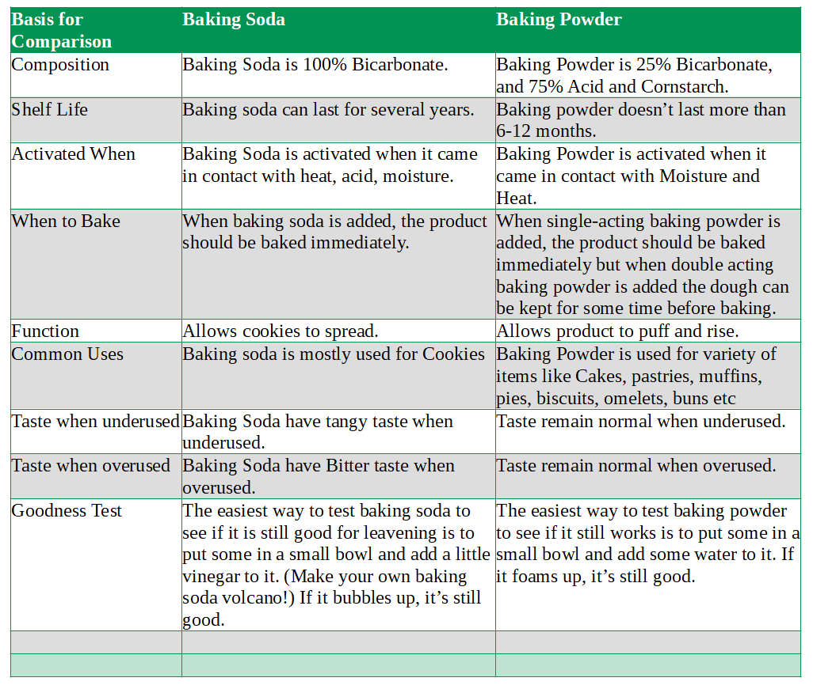

What is the main difference Baking Soda and Baking Powder?
The main difference between baking soda and baking powder is their composition and function. Baking Soda is 100% Bicarbonate whereas Baking Powder is 25% Bicarbonate, and 75% Acid and Corn starch. When baking soda is added, the product should be baked immediately. When single-acting baking powder is added, the product should be baked immediately but when double acting baking powder is added the dough can be kept for some time before baking.
Comparison Chart for Baking Soda and Baking Powder(Baking Soda vs Baking Powder)
| Basis for Comparison | Baking Soda | Baking Powder |
| Composition | Baking Soda is 100% Bicarbonate. | Baking Powder is 25% Bicarbonate, and 75% Acid and Cornstarch. |
| Shelf Life | Baking soda can last for several years. | Baking powder doesn’t last more than 6-12 months. |
| Activated When | Baking Soda is activated when it came in contact with heat, acid, moisture. | Baking Powder is activated when it came in contact with Moisture and Heat. |
| When to Bake | When baking soda is added, the product should be baked immediately. | When single-acting baking powder is added, the product should be baked immediately but when double acting baking powder is added the dough can be kept for some time before baking. |
| Function | Allows cookies to spread. | Allows product to puff and rise. |
| Common Uses | Baking soda is mostly used for Cookies | Baking Powder is used for variety of items like Cakes, pastries, muffins, pies, biscuits, omelets, buns etc |
| Taste when underused | Baking Soda have tangy taste when underused. | Taste remain normal when underused. |
| Taste when overused | Baking Soda have Bitter taste when overused. | Taste remain normal when overused. |
| Goodness Test | The easiest way to test **baking soda **to see if it is still good for leavening is to put some in a small bowl and add a little vinegar to it. (Make your own baking soda volcano!) If it bubbles up, it’s still good. | The easiest way to test **baking powder **to see if it still works is to put some in a small bowl and add some water to it. If it foams up, it’s still good. |
Baking Soda
Baking Soda is 100% Bicarbonate. Baking soda can last for several years. Baking Soda is activated when it came in contact with heat, acid moisture. When baking soda is added, the product should be baked immediately. Allows cookies to spread. Baking soda is mostly used for Cookies Baking Soda have tangy taste when underused. Baking Soda have Bitter taste when overused. The easiest way to test baking soda to see if it is still good for leavening is to put some in a small bowl and add a little vinegar to it. (Make your own baking soda volcano!) If it bubbles up, it’s still good. Baking soda is a base chemical which it means it reacts to acids. Too much of it and you’ll end up with an inedible final product that taste like a bar soap or metal while if too little it won't raise as much. It’s generally used in combination with lemon juice, buttermilk, yogurt, cream of tartar, brown sugar and so on.
Baking Powder
Baking Powder is 25% Bicarbonate, and 75% Acid and Cornstarch. Baking powder doesn’t last more than 6-12 months. Baking Powder is activated when it came in contact with Moisture and Heat. When single-acting baking powder is added, the product should be baked immediately but when double acting baking powder is added the dough can be kept for some time before baking. Allows product to puff and rise. Baking Powder is used for variety of items like Cakes, pastries, muffins, pies, biscuits, omelets, buns etc Taste remain normal when underused. Taste remain normal when overused. The easiest way to test baking powder to see if it still works is to put some in a small bowl and add some water to it. If it foams up, it’s still good.
Making Baking Powder from Baking Soda
Combine 1/3 teaspoon baking soda with 1/2 teaspoon cream of tartar and 1/8 teaspoon salt to make about teaspoon of single-acting baking powder.
Using Baking Soda and Baking Powder Together
Baking Soda is alkaline, and when mixed with acidic ingredients, its reaction causes bubbles of carbon dioxide to be released. It is this reaction, when trapped inside batter, that helps baked goods to rise.
Baking Powder, on the other hand, contains baking soda plus other acidic salts meant to react when they get wet or heated.
Some recipes call for both baking soda and powder. These recipes use the soda to offset the extra acidity in batters from ingredients such as buttermilk or molasses.
Baking soda cannot be omitted from these recipes without altering the flavor or making the baked goods tough.